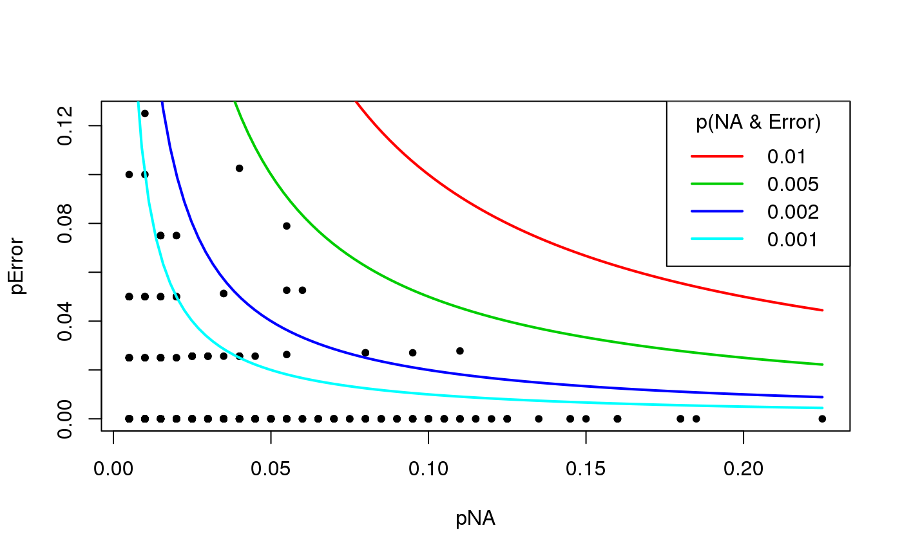
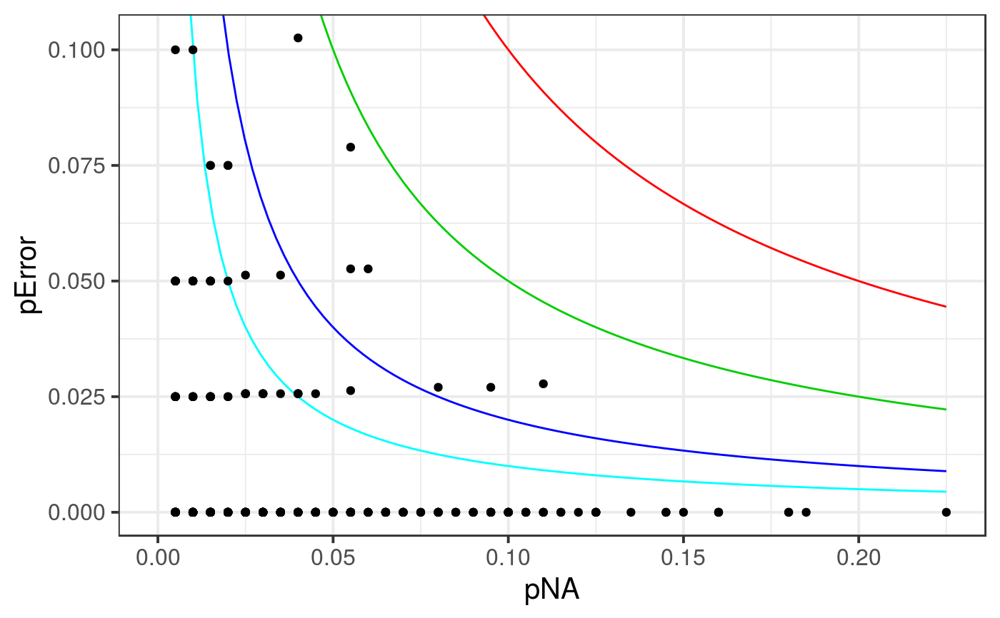

snp_fastImpute.RdFast imputation algorithm based on local XGBoost models.
snp_fastImpute(Gna, infos.chr, alpha = 1e-04, size = 200, p.train = 0.8, n.cor = nrow(Gna), seed = NA, ncores = 1)
| Gna | A FBM.code256
(typically |
|---|---|
| infos.chr | Vector of integers specifying each SNP's chromosome. |
| alpha | Type-I error for testing correlations. Default is |
| size | Number of neighbor SNPs to be possibly included in the model
imputing this particular SNP. Default is |
| p.train | Proportion of non missing genotypes that are used for training
the imputation model while the rest is used to assess the accuracy of
this imputation model. Default is |
| n.cor | Number of rows that are used to estimate correlations. Default uses them all. |
| seed | An integer, for reproducibility. Default doesn't use seeds. |
| ncores | Number of cores used. Default doesn't use parallelism. You may use nb_cores. |
An FBM with
the proportion of missing values by SNP (first row),
the estimated proportion of imputation errors by SNP (second row).
fake <- snp_attachExtdata("example-missing.bed") G <- fake$genotypes CHR <- fake$map$chromosome G2 <- snp_fastImpute(G, CHR) G2[, 1:5]#> [,1] [,2] [,3] [,4] [,5] #> [1,] 0 0.020 0.005 0.03500000 0.01 #> [2,] NA 0.025 0.000 0.02564103 0.00# Still missing values big_counts(G, ind.col = 1:10)#> [,1] [,2] [,3] [,4] [,5] [,6] [,7] [,8] [,9] [,10] #> 0 193 181 177 161 162 156 142 142 126 131 #> 1 7 15 21 29 33 32 44 49 49 55 #> 2 0 0 1 3 3 4 3 8 5 8 #> <NA> 0 4 1 7 2 8 11 1 20 6# You need to change the code of G # To make this permanent, you need to save (modify) the file on disk fake$genotypes$code256 <- bigsnpr:::CODE_IMPUTE_PRED fake <- snp_save(fake) big_counts(fake$genotypes)[4, ]#> [1] 0 0 0 0 0 0 0 0 0 0 0 0 0 0 0 0 0 0 0 0 0 0 0 0 0 0 0 0 0 0 0 0 0 0 0 0 0 #> [38] 0 0 0 0 0 0 0 0 0 0 0 0 0 0 0 0 0 0 0 0 0 0 0 0 0 0 0 0 0 0 0 0 0 0 0 0 0 #> [75] 0 0 0 0 0 0 0 0 0 0 0 0 0 0 0 0 0 0 0 0 0 0 0 0 0 0 0 0 0 0 0 0 0 0 0 0 0 #> [112] 0 0 0 0 0 0 0 0 0 0 0 0 0 0 0 0 0 0 0 0 0 0 0 0 0 0 0 0 0 0 0 0 0 0 0 0 0 #> [149] 0 0 0 0 0 0 0 0 0 0 0 0 0 0 0 0 0 0 0 0 0 0 0 0 0 0 0 0 0 0 0 0 0 0 0 0 0 #> [186] 0 0 0 0 0 0 0 0 0 0 0 0 0 0 0 0 0 0 0 0 0 0 0 0 0 0 0 0 0 0 0 0 0 0 0 0 0 #> [223] 0 0 0 0 0 0 0 0 0 0 0 0 0 0 0 0 0 0 0 0 0 0 0 0 0 0 0 0 0 0 0 0 0 0 0 0 0 #> [260] 0 0 0 0 0 0 0 0 0 0 0 0 0 0 0 0 0 0 0 0 0 0 0 0 0 0 0 0 0 0 0 0 0 0 0 0 0 #> [297] 0 0 0 0 0 0 0 0 0 0 0 0 0 0 0 0 0 0 0 0 0 0 0 0 0 0 0 0 0 0 0 0 0 0 0 0 0 #> [334] 0 0 0 0 0 0 0 0 0 0 0 0 0 0 0 0 0 0 0 0 0 0 0 0 0 0 0 0 0 0 0 0 0 0 0 0 0 #> [371] 0 0 0 0 0 0 0 0 0 0 0 0 0 0 0 0 0 0 0 0 0 0 0 0 0 0 0 0 0 0 0 0 0 0 0 0 0 #> [408] 0 0 0 0 0 0 0 0 0 0 0 0 0 0 0 0 0 0 0 0 0 0 0 0 0 0 0 0 0 0 0 0 0 0 0 0 0 #> [445] 0 0 0 0 0 0 0 0 0 0 0 0 0 0 0 0 0 0 0 0 0 0 0 0 0 0 0 0 0 0 0 0 0 0 0 0 0 #> [482] 0 0 0 0 0 0 0 0 0 0 0 0 0 0 0 0 0 0 0# Plot for post-checking ## Here there is no SNP with more than 1% error (estimated) pvals <- c(0.01, 0.005, 0.002, 0.001); colvals <- 2:5 df <- data.frame(pNA = G2[1, ], pError = G2[2, ]) # base R plot(subset(df, pNA > 0.001), pch = 20)idc <- lapply(seq_along(pvals), function(i) { curve(pvals[i] / x, from = 0, lwd = 2, col = colvals[i], add = TRUE) })legend("topright", legend = pvals, title = "p(NA & Error)", col = colvals, lty = 1, lwd = 2)# ggplot2 library(ggplot2) Reduce(function(p, i) { p + stat_function(fun = function(x) pvals[i] / x, color = colvals[i]) }, x = seq_along(pvals), init = ggplot(df, aes(pNA, pError))) + geom_point() + coord_cartesian(ylim = range(df$pError, na.rm = TRUE)) + theme_bw(15)#> Warning: Removed 140 rows containing missing values (geom_point).